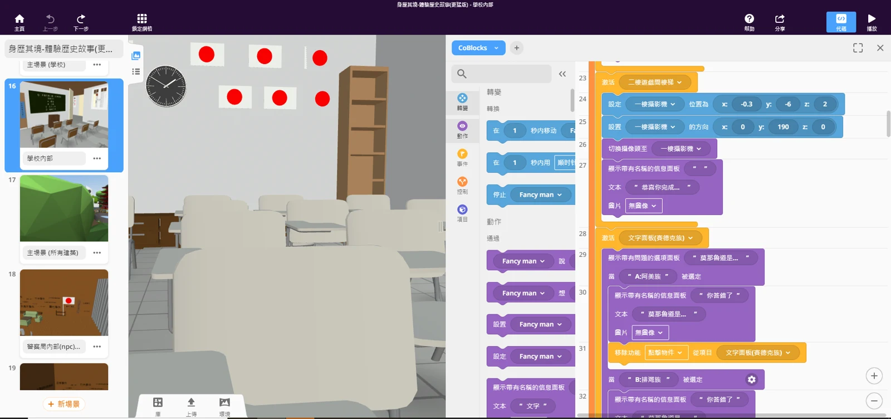

NSTC research project
Co-creating VR learning content
Helped create CoSpaces Edu games and learning materials for upper-elementary STEAM activities, and supported VR collaborative-learning experiments in an elementary school.

My contribution
Assisted senior research-group members in creating CoSpaces educational games for upper-elementary STEAM projects and supported a VR collaborative-learning experiment at an elementary school.
Period：2022
Goals and activity context
Participated in the LIT Research Group and assisted its project on activity design, collaboration scripts, and evaluation for VR content co-creation.
The project focused on upper-elementary STEAM activities in which students created and experienced VR content together. Group discussion, task sharing, and turning subject knowledge into a visible artifact were central to the activity design.
Activities and workflow
The research team planned an introduction to the tools, discussion guided by collaboration scripts on Padlet, scene creation in CoSpaces Edu, and sharing with feedback. This describes the activity plan in the TWELF 2022 documents rather than established learning outcomes.
My contribution was helping senior research-group members produce CoSpaces games and materials and supporting VR collaborative-learning experiments at an elementary school.
Tools and learning materials
Used CoSpaces and MAKAR in multimedia and mobile-learning courses to create XR educational games, then applied that CoSpaces experience to research-group materials. Scene objects, characters, and subject content had to work together in a form students could understand and operate.
Content production used the scene and interaction tools in CoSpaces. My contribution concerned educational games, learning materials, and experiment support. Padlet collaboration scripts and Tableau visualizations were supporting elements in the research team’s plan.

From materials to classroom use
VR materials had to work in a classroom, beyond how they looked on a development screen. Familiarity with the controls, clarity of the task, and group collaboration all shaped the activity.
Helping with materials and classroom work encouraged me to consider users and teaching contexts when reviewing digital experiences, alongside later work with Unity learning environments.
Outcomes and scope of contribution
Gained experience contributing to CoSpaces educational games and materials and supporting elementary-school VR collaborative-learning experiments. The cover and editor images come from the TWELF 2022 research presentation to explain the tools used in the activities.
The TWELF 2022 paper and presentation were authored by the research team and describe activity design and platform planning. They provide project context here. My contribution concerns materials and experiment support; learning outcomes require separate evaluation data.